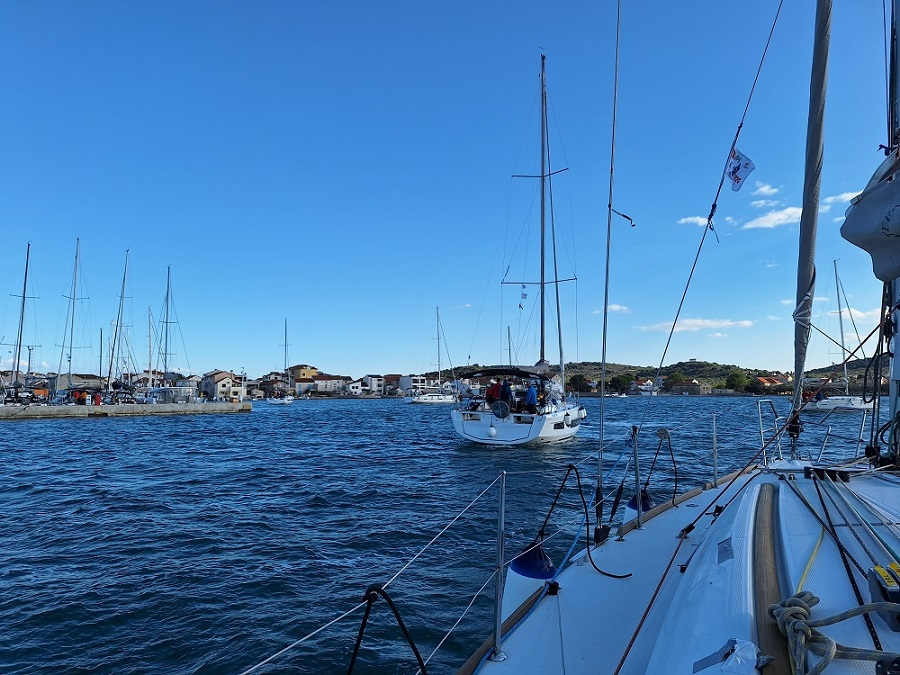

Pula – Cres – Martinšćica – Unije – Susak – Pula
Route des Segeltörns 2021
Rekonstruierter Routenverlauf – keine exakte GPS-Aufzeichnung.
This was my first sailing trip as skipper — and, in retrospect, a very honest one. The route started in Pula and led across the Kvarner toward Cres, Martinšćica, Unije and Susak before returning to Pula. On paper, it was a compact late-summer cruise through the northern Adriatic. In reality, it became a dense lesson in weather, reefing decisions, harbour uncertainty, tired crews and the quiet weight of responsibility.
- Route: Pula → Cres → Martinšćica → Unije → Susak → Pula
- Character: first skipper trip, mixed training cruise and weather-driven route
- Main lesson: reef early, communicate clearly and never underestimate Bora in the Kvarner
- Most demanding part: handling too much headsail in strong Bora conditions west of Cres
- Most memorable night: anchoring off Unije after dark, followed by anchor watch
- Nice to know: the route looks simple on a chart, but weather, fatigue and harbour availability made it feel much bigger
Start in Marina Veruda
The handover in Marina Veruda was the first real threshold of the trip: suddenly the idea of being skipper turned into a concrete boat, a checklist and a berth in Pula. Carmen, an Elan Impression 384, looked spacious and reassuring at first glance, with a warm wooden interior and enough room for a small crew, but the details already told a more complicated story. Some fittings were worn, the gangway solution felt rather improvised, and during the check we discovered small but meaningful issues — from sticky mainsail slides to equipment questions that were answered with more Mediterranean shrug than procedural clarity. Nothing dramatic enough to stop the trip, but enough to make the boat feel real: not a brochure yacht, but a charter boat with history, quirks and a few warnings hidden between polished wood, mooring lines and cockpit hardware.
Pula to Cres — confidence meets reality
We left Pula with the open optimism of a first self-organised charter week. Before this trip I had collected experience on dinghies and as crew on several Adriatic yacht trips, but this was the first time the responsibility was formally mine. The plan was deliberately modest: sail toward Cres, practise anchoring on the western side of the island and slowly settle into the rhythm of the boat.
On the way south of Istria we passed Porer lighthouse and continued toward Cres. The wind faded, the sun came from an awkward angle, and the cockpit slowly turned into an improvised shade structure made from cabin sheets and clothes pegs. It was not elegant, but it worked — and it already showed the practical spirit of the trip: solve the immediate problem first, refine the method later.
The planned anchorages on Cres did not feel right. One bay was too small and too close to rocks and shore structures for our confidence level. The next was more open, already occupied by a yacht with a stern line ashore, and our own anchoring attempts did not settle into anything reassuring. As dusk approached, the better decision was to stop experimenting and head for ACI Marina Cres.
Cres — a safe harbour and a forced pause
We arrived in Cres after dark and berthed stern-to with mooring lines. The manoeuvre was not pretty, but it worked. The prop walk made the approach more difficult than expected, and it became one of those early lessons that stays with you: the boat may be moving slowly, but it is never neutral.
The next day brought the forecast we did not want to see: strong Bora, heavy gusts and unsettled weather. We stayed in the marina, which was the right call. The boat leaked in several places, the sprayhood and bimini collected rainwater, and the expensive oilskins finally had their first real assignment. It was not a heroic sailing day, but it was a useful harbour day — watching other crews, observing manoeuvres and understanding how quickly weather changes the scale of every decision.
Cres to Martinšćica — the hard lesson
When we left Cres, Bora was still present. The mainsail was already in the second reef, and the genoa was initially only partly unrolled. Inside the lee of Cres everything still felt manageable, so we opened the headsail further. For a while, the boat sailed fast and impressively well. Too well, in fact.
Once we reached the more exposed Kvarner wind channel, Carmen began to approach hull speed. The boat was still under control, but the rudder pressure told the more honest story. We had carried too much sail for too long. Reefing the genoa then became the critical moment of the entire trip.
Trying to bring the boat into the wind under sail led to flogging canvas, whipping sheets, difficult communication and very little progress. The headsail would not furl properly under load. Eventually we used the engine to hold the bow into the wind and managed to bring the genoa under control. Nothing broke, nobody was injured, and the situation was solved — but the feeling of being small in front of weather, noise and force remained.
After that, the original plan of continuing toward Unije no longer felt sensible. We chose the nearest reasonable harbour instead: Martinšćica. It was not an elegant strategic decision, but it was the correct skipper decision.
Martinšćica — refuge with an uneasy night
Martinšćica became our next stop, reached after working against wind and sea. The harbour situation was not completely clear, and we spent time circling outside before finally going alongside on the outer mole. The harbour staff believed the berth would be acceptable overnight. I was less convinced. In the end, both views were partly right.
The boat lay safely, but not peacefully. With wind pressing us toward the quay, the fenders worked all night between hull and stone. Their constant creaking turned into the soundtrack of the night and even followed me into my dreams. Martinšćica itself, however, left a warm impression: a small harbour, a restaurant directly by the water and beautiful walking paths through trees and rock toward quiet beaches.
The next day we deliberately slowed down. After the pressure of the previous leg, breakfast, a walk and a small swim stop were more important than chasing miles. The calm did not last forever: when the ferry announced itself, we had to leave the mole in a hurry. The departure was rushed, but successful — another small lesson in why harbour plans should never depend on wishful stillness.
Night leg to Unije
From Martinšćica we continued toward Unije, first partly under sail and later mostly under engine. Arrival came after dark. The harbour was under construction, available berths were unclear, and a submerged concrete block inside the harbour basin made the situation even less inviting. Several boats were anchored in the shallow south-western part of the bay, while only a few lay farther out on the eastern side.
After circling for some time and trying to understand the situation in darkness, we anchored off the eastern side of the bay. The anchor set well on the first attempt, which was a relief. Still, the night did not feel fully comfortable: the chain had no reliable length markings, mobile reception was poor, and a wind shift could have changed the geometry of the anchorage considerably.
An anchor watch was established. It was not glamorous, but it was seamanship. The next morning came early and not especially restful — but the boat was safe, the anchor had held, and the route could continue.
Unije to Susak and back to Pula
With updated weather information, we headed toward Susak. The idea was modest: stop briefly, eat, maybe take a short walk, and then continue back toward Pula before stronger Jugo conditions became a problem. As so often on this trip, the plan met the harbour reality.
Susak’s harbour situation was tight, shallow in places and strongly shaped by local instructions. We first prepared for one berthing option, were then redirected, changed lines and fenders, and finally understood that this would not become the relaxed island stop we had imagined. The decision was made to move on rather than force a stay that already felt awkward.
The final leg back to Pula closed the circle of the trip. By distance, it was only a 107-nautical-mile cruise through the Upper Adriatic and the Kvarner. By experience, it was much larger: the first real week of command, with all the small doubts, mistakes, decisions, recoveries and moments of quiet pride that belong to becoming responsible for a boat.
Looking back, this route was less about ticking off destinations than about learning the scale of responsibility. Pula, Cres, Martinšćica, Unije and Susak became more than place names — they became markers of a first skipper’s learning curve.
